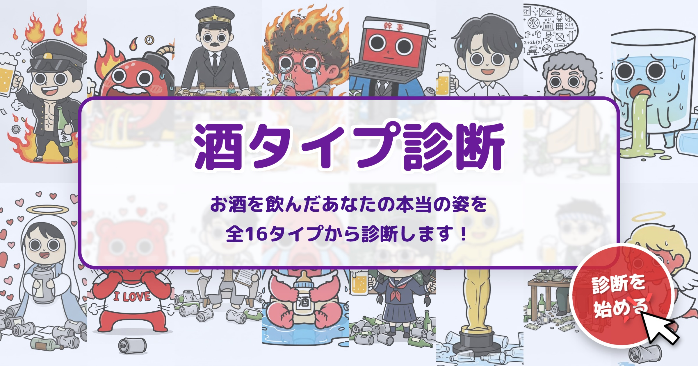

「帰った記憶が無い」「身に覚えのない高額のレシート」「送信履歴の見知らぬポエム」「おびただしい数の足のあざ」
酒タイプ診断を楽しむ飲み会ラバーの皆さんにとって、これらは日常茶飯事でしょう。
しかし、楽しい飲み会に代償はつきもの。一瞬のエクスタシーと引き換えに翌日後悔した経験がある方も、多いのではないでしょうか。
そこで今回は、事務局メンバーが体を張って（肝臓を酷使して）、「結局、何が一番効くのか？」を検証しました。
※ぶっちゃけこの記事には広告が含まれます！検証自体は大真面目にやったのと、広告収入はサイトコンテンツの拡充費としてありがたく使わせて頂きます。気になった方は是非読んでみてください！
今回は、以下の4つで検証します。
条件: 同種・同僚のお酒を飲む飲み会を4回実施。次の日の体調を比較する
判定基準:
結果: 「ないよりマシだが、頭痛は残る」
コメント: トイレの回数が増えて、飲み会のテンポが悪くなるのが難点。無料なのは神。
結果: 「効く気がする。プラシーボかも？」
コメント: 飲み会前にコンビニに寄れないとキツい。あと、飲んでる姿を見られると「あ、こいつ今日戦う気だな」と良くない方向に飲み会が転がり始める予兆に。
結果: 「思ったより翌朝すっきりだった」
結果: 「優しく起きられた感じ」
結局、どれが良いのか？ 診断サイトらしくタイプ別に提案します。
備えがあれば、お酒はもっと美味しくなります。 二日酔いに真摯に向き合い、楽しいお酒ライフを👍